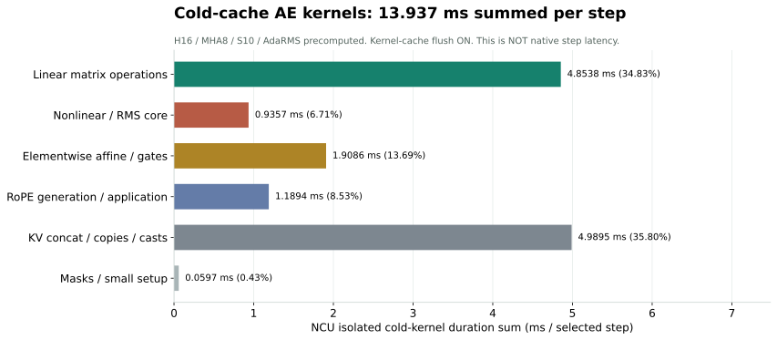
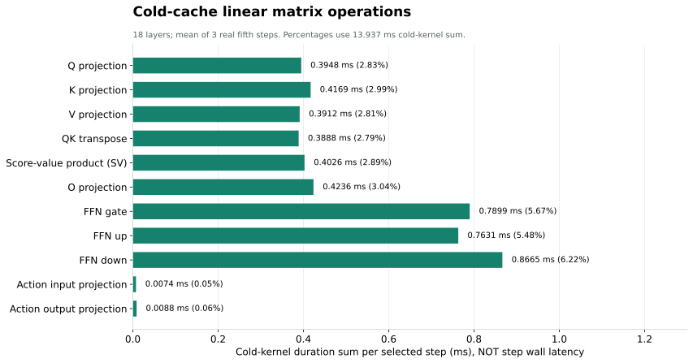
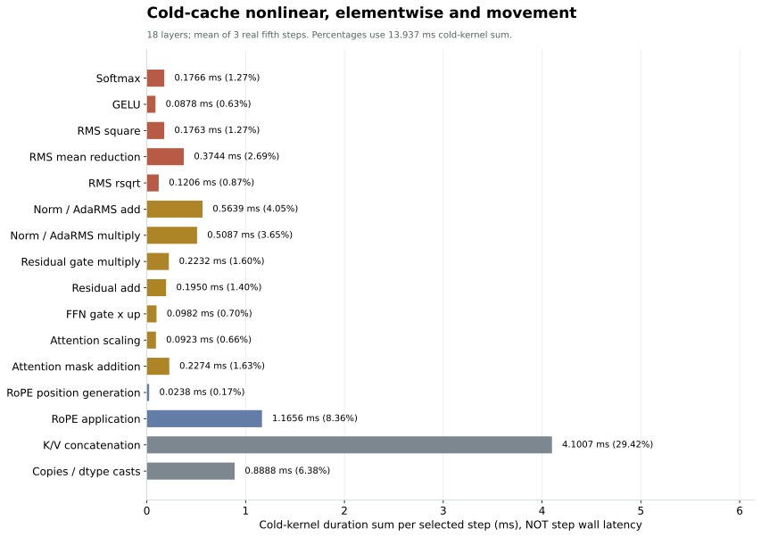
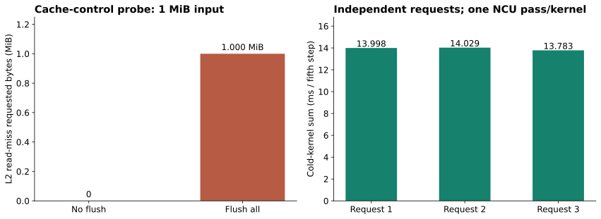

2026-11-05 · NVIDIA Thor · 独立冷缓存数据批次
π0.5 · H16 · MHA8
逐 kernel 冷缓存计时
OpenPI · step 10 · Q/K/V 各 8 heads · head_dim 256 · B1 · AdaRMS 预计算保留
13.937 ms单个选中 step 的冷缓存 kernel 耗时之和
3 × 1,0333 个完整请求，各采真实第 5 步
1 pass / kernel正式模型只收 duration，无多指标回放
这不是单步端到端 latency，也不是模型加载时间。 权重和 AdaRMS 预计算张量先放在内存中，完整 warmup 20 次；之后由 NCU 在每个被测 kernel 前清硬件缓存。只汇总 kernel GPU duration，清缓存、工具同步、CPU 提交、DMA memcpy 和 kernel 间隙不在这个合计中。
01 / 冷缓存耗时分布

范围 13.783–14.029 ms，标准差 0.134 ms；统计单位是 3 个不同请求中对应的第 5 步，而不是 3,099 个独立请求。
02 / 线性与非线性算子细分


Nonlinear / RMS core 为 softmax、GELU、RMS square/mean/rsqrt；norm 调制、residual gate、FFN gate × up 等另列逐元素操作。RoPE 独立列出，K/V concat 与 cast/copy 不是非线性核心。
AdaRMS conditioning dense 仍为 0 个在线 kernel。 清空 L1/L2 等硬件缓存，不会删除存在设备内存中的预计算张量；这些条件值依旧直接复用，只是读取时可能需要经过内存层级。
完整算子表
03 / 清缓存是否生效

同一 1 MiB 输入做固定加法，50 次预热后比较 NCU --cache-control none 和 all。不清缓存的 4 个样本 L2 read-miss sectors 均为 0；清缓存的 4 个样本均为 32,768，对应 1 MiB 的 miss 请求量，验证本探针的清缓存效果。
未清缓存时 L2 hit 和 miss 计数都为 0，因此不能把它写成“L2 命中率 100%”；这与请求由更近的缓存服务相符。探针的 hit/miss 指标需要 3 个计数器 pass，不用于模型延迟统计。L2 miss 不是本次所有模型算子的 DRAM 字节测量。
04 / 方法、边界与限制
- Nsight Compute 2026.1.1：
--metrics gpu__time_duration.sum --cache-control all --replay-mode kernel --clock-control none --import-sass off；用 NVTX 仅选真实第 5 个 denoise_step。
- 每个请求仍执行 ViT、VLM 及全部 10 steps，仅记录其中第 5 步的 kernel。重复 3 次，包含 18 层以及动作输入/输出投影，不包含外围 Euler 更新。所有 3,099 kernels 均为 1 pass。
- 使用实际 ATen dispatch 的 NVTX 标识映射算子；CUB 自己的嵌套 NVTX 名字通过外层完整 stack 还原归属，没有丢弃这些 kernel。
- 每次均有 1,033 kernels。三次名称、顺序、grid/block 一致，也与之前自然缓存 trace 的 1,033 个 kernel 一致。最终动作与之前正常推理逐位相同；370 次 dense cache 命中/请求。
- 保留此前 OpenPI 原生 eager attention、selective BF16/FP32、1 CPU/interop 线程，VLM 与 AE 均为物理 MHA8；不是训练过的 MHA 策略精度验证。
- 不锁系统时钟。NCU 保留默认 stable Tensor Core pipeline boost 设置；工具自身的串行化、计时口径与运行时频率差异都可能影响结果。
- 一个逻辑算子可能包含多个 kernel。逐 kernel 清缓存会破坏其内部跨 kernel 复用，因此这组数据不是一次逻辑算子从 DRAM 起步但内部正常复用的时间，更不是实际 GPU/PIM offload 的总成本。
- 现有正常 step 平均 11.573 ms、完整请求 p50 219.263 ms 仍保留。不同工具/缓存/同步口径，不计算冷/热加速比，不把本页 kernel 和当成正常 AE 延迟，不乘 10 冒充完整 AE 实测。
完整说明与复现 · 统计 JSON · 算子 CSV · 分类 CSV · 资源释放记录
上传仓库：AlinaWXY/pim_vla_simulator
分支：thor-data/pi05-openpi-mha8-h16-s10-cold-kernel-20261105
数据目录：thor-data/pi05-openpi-mha8-h16-s10-cold-kernel-20261105/